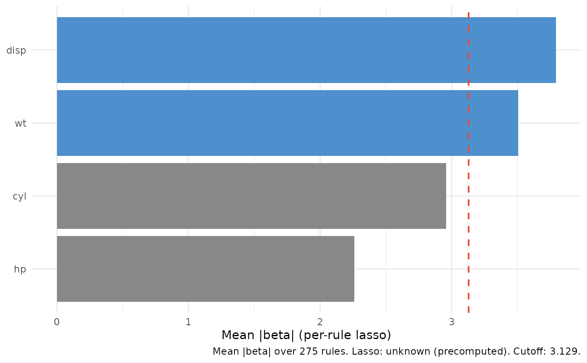

Tidy wrapper around varPro::beta.varpro() for the regression or
classification family.
Aggregates the per-rule lasso coefficient (β̂) by variable into
mean(|β̂|) and flags variables above a scalar cutoff. Optional
beta_fit argument lets callers compute the expensive
beta.varpro() step once and reuse the result.
Arguments
- object
A
varprofit fromvarPro::varpro()(regression or classification family).- ...
Forwarded to
varPro::beta.varpro()whenbeta_fit = NULL; ignored otherwise (with a warning). Documented forwardables:use.cv,use.1se,nfolds,maxit,thresh,max.rules.tree,max.tree.- cutoff
Selection threshold on
beta_mean.NULL(default) →mean(beta_mean)across released variables. Numeric scalar otherwise.- beta_fit
Optional pre-computed
varPro::beta.varpro()result for the sameobject.NULL(default) → the wrapper runsbeta.varpro()itself. When supplied, must be avarpro-class object whose$resultshas columnstree / branch / variable / n.oob / imp.- which_class
For a classification fit, name of a single response level to subset on.
NULL(default) returns all classes (binary fits resolve to the last factor level — the positive-class convention used byglmandgg_roc). Ignored with a warning on regression fits.
Value
A data.frame of class c("gg_beta_varpro", "data.frame").
For a regression fit: one row per released variable, sorted by
beta_mean descending. For a classification fit: long-format with
an extra class column, one row per (variable, class) pair;
variable is a factor whose levels are set by
mean(|sum-of-class-beta|) descending so every facet / panel shares
the same row order. which_class (or the binary default
last-factor-level) collapses the output to a single class.
Note
Multivariate regression (regr+) and survival families are out
of scope for this release and tracked for v3.1.0. The
unsupported-family path errors with a message pointing at that work.
What this is doing
For each rule (a tree-branch pair) in the forest, varPro::beta.varpro()
fits a one-predictor lasso regression of the response on the released
variable's values, restricted to the OOB observations inside the rule's
region. The wrapper aggregates those per-rule coefficients into one
number per variable.
What imp actually is (pedantic, because the column name is misleading)
The imp column on beta.varpro()'s $results is not a
variable-importance score in the conventional sense. It is a regularised
regression coefficient. Specifically:
Per rule,
glmnetfits a one-predictor lasso of the response on the released variable inside the rule's OOB region.use.cv = TRUEselects λ by 10-fold CV (defaultnfolds = 10);use.1se = TRUE(default) pickslambda.1se.use.cv = FALSEuses the full λ path.impis the fitted coefficient β̂ at the chosen λ. Sign is real (direction of local association). Magnitude depends on the predictor's units (rawx, no standardisation); a predictor in millimetres has a smaller |β̂| than the same predictor in metres.Lasso shrinkage can drive β̂ to exactly zero. Those zeros are data, not missingness, and are kept in the aggregation. Convergence failures land as
NA_real_and are dropped.The per-variable aggregate is
beta_mean = mean(|β̂|)across the rules where this variable was released. It is not a permutation importance, not a split-strength importance, and not directly comparable on the same numeric axis togg_varpro()'s z-scores. Disagreement withgg_varprois often diagnostic, not a bug.
In code form: imp_r = β̂_glmnet(y | x_v restricted to rule r, λ chosen by use.cv / use.1se).
What's in the output
One row per released variable. Columns:
variable: predictor name.beta_mean: mean of|β̂|across that variable's rules.n_rules: count of rules contributing (zero-β rules included; onlyNAfailures excluded).selected:beta_mean >= cutoff.
Provenance attribute carries source, family, ntree, cutoff,
cutoff_default, use.cv, n_rules_total, n_rules_nonzero,
precomputed, and xvar.names.
What you use this for
Picking variables when local effects matter more than aggregate
split-strength contribution. Compare side-by-side with gg_varpro() —
a variable that scores high here but low in gg_varpro is one whose
local linear effect inside many rules is real even though its
release-rule contrast is modest.
Caching
beta.varpro() is the expensive call (per-rule glmnet / cv.glmnet,
often minutes on real data). Compute it once and reuse:
v <- varPro::varpro(mpg ~ ., data = mtcars, ntree = 200)
b <- varPro::beta.varpro(v, use.cv = TRUE) # expensive, once
gg_a <- gg_beta_varpro(v, beta_fit = b) # cheap
gg_b <- gg_beta_varpro(v, beta_fit = b, cutoff = 0.5)Provenance carries precomputed = TRUE when beta_fit was supplied.
Classification
For a varpro classification fit (object$family == "class",
binary or multi-class), the returned frame is long-format with an
extra class column: one row per (variable, class) pair. The
beta_mean column aggregates the per-class lasso β̂ stored in
beta.varpro()'s imp.<k> columns (one per class level). Same
pedantic-β semantics as regression, applied independently to each
class.
Binary default: which_class = NULL resolves to the last
factor level of the response — the positive-class convention used
by glm and gg_roc. For a 30-day-mortality outcome with levels
c("no", "yes"), that means the wrapper shows you "yes" (the
event) by default.
Multi-class default: which_class = NULL returns all K
classes; the plot method renders facet_wrap(~ class) with one
cutoff line per facet.
which_class = "<name>" filters to a single class regardless
of K. Errors if the name isn't in the response levels.
Per-class cutoffs: cutoff = NULL resolves to each class's
mean(beta_mean). A scalar broadcasts. A named numeric vector
overrides per class; missing names fall back to that class's mean.
Example (30-day mortality, binary):
fit <- varPro::varpro(event_30d ~ ., data = clinical, ntree = 200)
gg <- gg_beta_varpro(fit) # default: "yes" panel
plot(gg)Reproducibility
Byte-for-byte agreement between cached (beta_fit = b) and uncached
(beta_fit = NULL) outputs requires that b was computed by
beta.varpro(object, ...) on the same object — set.seed() alone is
not sufficient, because beta.varpro's internal cv.glmnet fits can
pick slightly different folds across separate calls. Reuse beta_fit
when reproducibility matters.
Examples
# \donttest{
if (requireNamespace("varPro", quietly = TRUE)) {
set.seed(1)
v <- varPro::varpro(mpg ~ ., data = mtcars, ntree = 50)
b <- varPro::beta.varpro(v)
gg <- gg_beta_varpro(v, beta_fit = b)
plot(gg)
}

# }